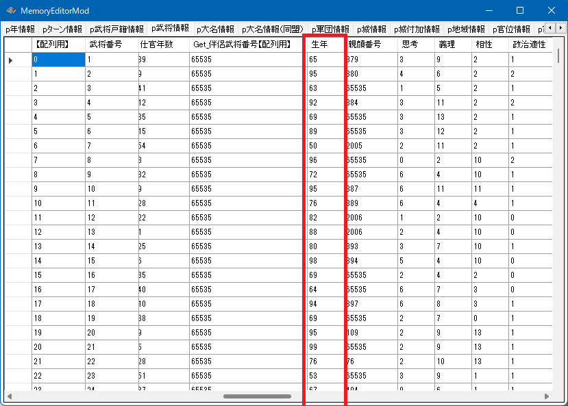
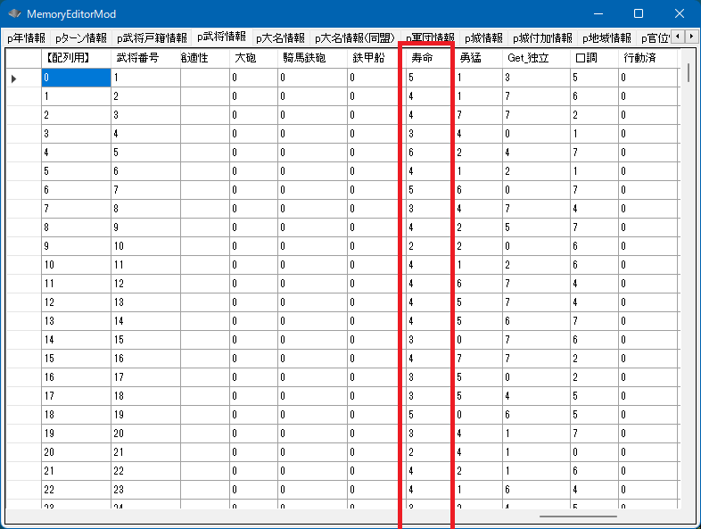
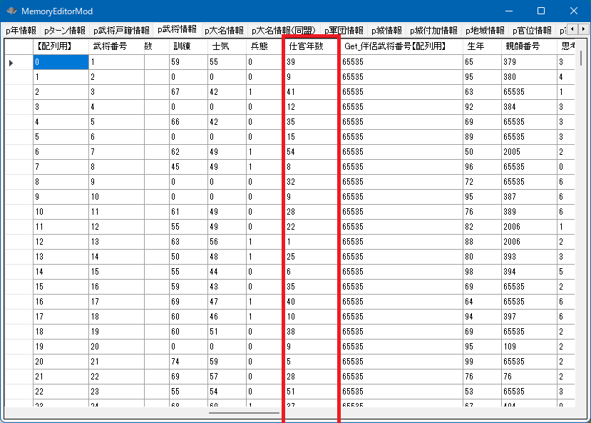
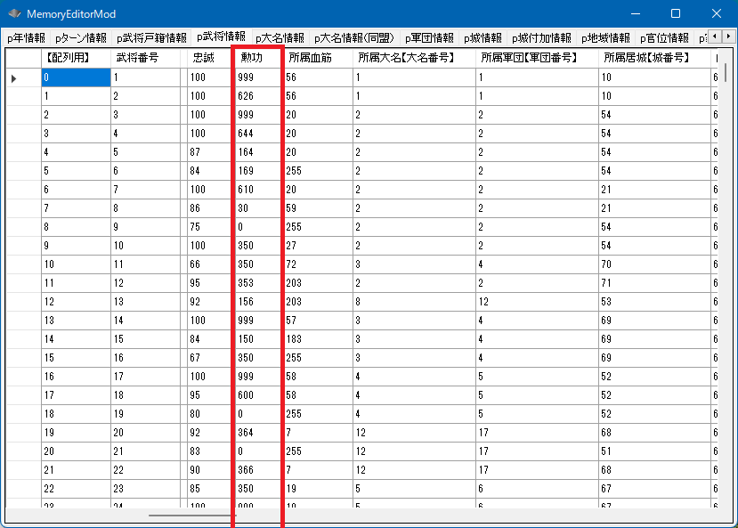

武将 - 年齢・寿命・仕官・勲功
武将の行動済や会見済に関するAPIの説明となります。
武将の年齢の取得・設定

メモリエディタ上で見えている「生年」の数値を見て不思議に思うかもしれません。
これは「年齢」ではなく、何年に生まれたのか？ という年です。
そしてそれは「西暦」ではなく「天翔記歴」とでもいう基準です。
天翔記歴は、デフォルトだと1454年であり、Get_天翔記基準年() によって取得できます。
int Get_武将年齢(int 武将番号【配列用】);
bool Set_武将年齢(int 武将番号【配列用】, int 年齢)
12～15歳の範囲での年齢の変更は、バグるもとになりやすいです。
(登場していた武将や姫が見えなくなったり、過ぎたハズのイベントが再び発生といったことが発生します)
原則、処理に自身がない限りは、16歳以上の年齢への変更にとどめましょう。
void カスタム::On_相場変更直前() {
for (int iBushouID = 0; iBushouID < 最大数::武将情報::配列数; iBushouID++) {
// 実際には20に固定するというよりも、生年が遅い生まれになるといった処理になる。
if (Get_武将年齢(iBushouID) > 20) {
Set_武将年齢(iBushouID, 20);
}
}
}
寿命
p武将情報[ix].寿命
寿命は0～7の値をとります。0なら短命、7は長寿です。

void カスタム::On_相場変更直前() {
for (int iBushouID = 0; iBushouID < 最大数::武将情報::配列数; iBushouID++) {
int 寿命 = p武将情報[iBushouID].寿命;
デバッグ出力 << Get_名字(iBushouID) + Get_名前(iBushouID) << "の寿命は" << 寿命 << "です" << endl;
}
for (int iBushouID = 0; iBushouID < 最大数::武将情報::配列数; iBushouID++) {
// 家宝などを除いた戦才が160以上(天翔記のデータ的には80以上)であれば、長寿にする
if (Get_元最大戦才(iBushouID) >= 80) {
p武将情報[iBushouID].寿命 = 7;
}
// 家宝などを除いた戦才が80以下(天翔記のデータ的には40以下)であれば、短命にする
if (Get_元最大戦才(iBushouID) <= 40) {
p武将情報[iBushouID].寿命 = 0;
}
}
}
仕官年数
p武将情報[ix].仕官年数

デフォルトの天翔記では仕官年数はさして意味のある数値ではありませんが、TSModでは、
仕官年数が長いほど「軍師」としての評価に有利に働きます。
void カスタム::On_相場変更直前() {
for (int iBushouID = 0; iBushouID < 最大数::武将情報::配列数; iBushouID++) {
int 仕官年数 = p武将情報[iBushouID].仕官年数;
// 仕官年数が30以上は特記すべき。表示。
if (仕官年数 >= 30) {
デバッグ出力 << Get_名字(iBushouID) + Get_名前(iBushouID) << "は仕官年数が" << 仕官年数 << "です" << endl;
}
}
for (int iBushouID = 0; iBushouID < 最大数::武将情報::配列数; iBushouID++) {
// 仕官年数が問題となる、現役や軍団長ならば...
if (p武将戸籍情報[iBushouID].状態 == 状態::現役 || p武将戸籍情報[iBushouID].状態 == 状態::軍団長) {
// その武将の年齢-10を仕官年数とする
int 年齢 = Get_武将年齢(iBushouID); // 負のオーバーフローを避けるために 一旦 int で受け取る
年齢 = 年齢 - 10;
if (年齢 < 0) { 年齢 = 0; }
p武将情報[iBushouID].仕官年数 = 年齢;
}
}
}
勲功

p武将情報[ix].勲功
void カスタム::On_相場変更直前() {
for (int iBushouID = 0; iBushouID < 最大数::武将情報::配列数; iBushouID++) {
int 勲功 = p武将情報[iBushouID].勲功;
// 勲功が問題となる、現役や軍団長ならば...
if (p武将戸籍情報[iBushouID].状態 == 状態::現役 || p武将戸籍情報[iBushouID].状態 == 状態::軍団長) {
// 勲功が900以上は特記すべき。表示。
if (勲功 >= 900) {
デバッグ出力 << Get_名字(iBushouID) + Get_名前(iBushouID) << "は勲功が" << 勲功 << "です" << endl;
}
}
}
for (int iBushouID = 0; iBushouID < 最大数::武将情報::配列数; iBushouID++) {
// 勲功が問題となる、現役や軍団長ならば...
if (p武将戸籍情報[iBushouID].状態 == 状態::現役 || p武将戸籍情報[iBushouID].状態 == 状態::軍団長) {
// その武将の年齢の10倍を勲功とする。ただし、999を超えない範囲
int 年齢 = Get_武将年齢(iBushouID); // オーバーフローを避けるため、一旦intで受け取る
int 新勲功 = 年齢 * 10;
if (新勲功 > 999) { 新勲功 = 999; }
p武将情報[iBushouID].勲功 = 新勲功;
}
}
}
忠誠

p武将情報[ix].忠誠
０～100の値を取ります。0は内応や裏切りをしやすい状態です。
一方、やや裏切りやすい性格であっても忠誠100があれば、いきなり裏切るといったことは起きにくいと言えます。
void カスタム::On_相場変更直前() {
for (int iBushouID = 0; iBushouID < 最大数::武将情報::配列数; iBushouID++) {
// 一般の「宿老・家老・部将・侍大将・足軽頭」、そして「軍団長」 が対象
if (p武将戸籍情報[iBushouID].状態 == 状態::現役 || p武将戸籍情報[iBushouID].状態 == 状態::軍団長) {
// 義理が4以下の武将は相場が切り替わるごとに（＝季節ごとに）、忠誠が5減っていく
if (p武将情報[iBushouID].義理 <= 4) {
int 忠誠 = p武将情報[iBushouID].忠誠; // アンダーフローを防止するため、一旦 int で受け取る
忠誠 = 忠誠 - 5;
if (忠誠 < 0) {
忠誠 = 0;
}
p武将情報[iBushouID].忠誠 = 忠誠;
}
// 義理が11以上の武将は相場が切り替わるごとに（＝季節ごとに）、忠誠が5増える
else if (p武将情報[iBushouID].義理 >= 11) {
int 忠誠 = p武将情報[iBushouID].忠誠; // オーバーフローを防止するため、一旦 int で受け取る
忠誠 = 忠誠 + 5;
if (忠誠 > 100) {
忠誠 = 100;
}
p武将情報[iBushouID].忠誠 = 忠誠;
}
}
}
}
より詳細を知るには...
「武将 － 年齢・寿命・仕官・勲功」に関する主な所は以上となります。
詳しくは「武将情報型.h」を参照してください。